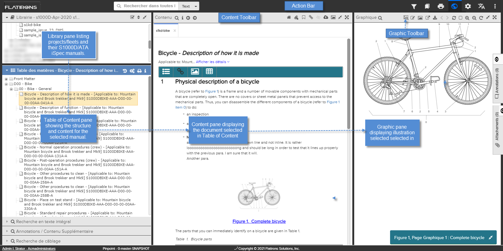

L'interface utilisateur se compose de plusieurs fenêtres qui sont disponibles à partir de la page principale.
L'illustration ci-dessous vous donne un aperçu sur les principales caractéristiques et la façon de naviguer et pour afficher le contenu dans l'application. Les fonctions / boutons dans l'interface utilisateur peuvent varier en fonction de la publication et du builder qu'il l'a généré.

L'Interface utilisateur (Standalone Light)
| Les éléments | La description |
|---|---|
| Barre d'action | La barre supérieure en noire contient un ensemble de
fonctions qui sont utiles lors de la navigation et la lecture de
publications, tels que le filtrage, la recherche et
l'impression. Vous pouvez également accéder aux interfaces
utilisateur pour le Data Manager et
l'Access Control. Ces entrées sont décrites dans Les composants de Barre d'action. Remarque : Vous ne pouvez pas accéder au
Data Manager ou au Access Control à partir de Pinpoint Standalone Light.
|
| Librairie | La fenêtre Librairie est située dans le coin supérieur gauche de l'interface utilisateur. Elle contient des projets qui sont disponibles dans l'application. Pour plus de détails, se référer à La fenêtre de Librairie. |
| Table des matières | La fenêtre Table des matières est situé en dessous de fenêtre Librairie. elle affiche la structure du publication sélectionné dans la fenêtre Librairie. Pour plus de détails, se référer à La fenêtre de Table des matières. |
| Recherche en texte intégral | Le volet Recherche en texte intégral est minimisé par défaut et se trouve sous le tableau de contenu. Lorsque sélectionné, il est maximisé. En fonction du type de données, ce volet vous permet de rechercher un texte, des numéros de pièce ou des FIN spécifiques. Pour plus de détails, reportez-vous à Volet Recherche en texte intégral. |
| Annotations / Contenu supplémentaire | Le volet de recherche Annotations / Contenu supplémentaire est situé sous la recherche de texte intégral. Ce volet vous permet de rechercher des annotations ou des pièces jointes. Pour détails, reportez-vous à Volet Annotations / Recherche de contenu supplémentaire. |
| Recherche du FRMFIM | La fenêtre de Recherche du FRMFIM est disponible lorsque vous ouvrez une publication du FRMFIM dans la fenêtre de Libraire. Pour plus de détails, se référer à Fenêtre de recherche FRMFIM. |
| Recherche de câblage | La fenêtre de Recherche de câblageest disponible lorsque vous ouvrez une publication de câblage pris en charge dans la fenêtre de Libraire. Pour plus de détails, se référer à La fenêtre recherche de câblage. |
| Recherche du TSM | La fenêtre de Recherche du TSM est disponible lorsque vous ouvrez une publication de dépannage dans la fenêtre de Libraire. Pour plus de détails, se référer à Recherche sur TSM. |
| Contenu | La fenêtre du Contenu au centre de page affiche le document sélectionné dans la Table des matières. Pour plus de détails, se référer à La fenêtre Contenu. |
| Graphique | La fenêtre du Graphique sur le côté droit affiche les illustrations sélectionnées dans la fenêtre du Contenu. Un ensemble de fonctions est disponibles dans la barre d'outils. Pour plus de détails, se référer à La fenêtre graphique. |
| La barre du bas | La barre du bas affiche les informations suivantes :
|